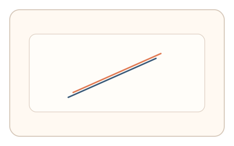
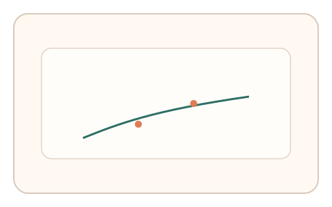
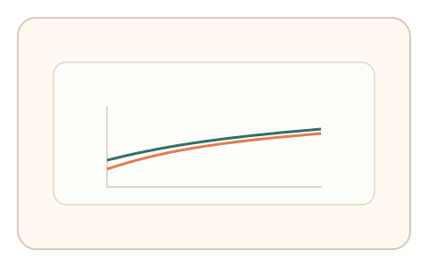

#165
Reverse Brainstorming - Round 3
已扩展
非平稳适应轨迹
在单次验证中缓慢漂移动力学参数，判定基于适应连续性与曲线形态。
概念原文
在同一次验证中逐步改变交互动力学（例如增益/阻尼缓慢漂移），判定基于适应曲线的连续性与形态。
让攻击者难以用静态分布拟合，必须实时跟随非平稳变化。
研究背景
非平稳变化会迫使用户持续调整，真实适应呈连续跟随而非静态分布。攻击者难以用固定模型拟合非平稳轨迹。
核心机制
- 在任务中缓慢漂移增益/阻尼等参数。
- 记录用户误差与纠偏变化。
- 分析适应曲线连续性。
- 与基线区间比较。
用户流程
- 步骤 1：用户进入连续控制任务。
- 步骤 2：系统逐步改变动力学参数。
- 步骤 3：系统评估适应连续性。
判定信号
连续适应斜率
真实适应表现为平滑连续变化。
漂移跟随误差
跟随误差反映实时调整能力。
判定逻辑
适应曲线需连续且在基线范围；分段跳变或无跟随判异常。
对抗面
- 控制器拟合固定分布
- 回放静态轨迹
防御与缓解
- 随机化漂移速率与方向
- 插入小幅随机扰动
- 结合反应时信号
可达性与风险
提供更慢漂移与宽容阈值。
- 漂移过快导致失败率高
- 低性能设备响应滞后
可视化状态

状态 1：参数漂移
动力学参数缓慢变化。

状态 2：连续适应
用户持续修正误差。

状态 3：形态判定
评估适应曲线形态。
参考资料
Non-stationary process
说明非平稳变化与漂移。
Motor adaptation
说明持续适应与曲线形态。